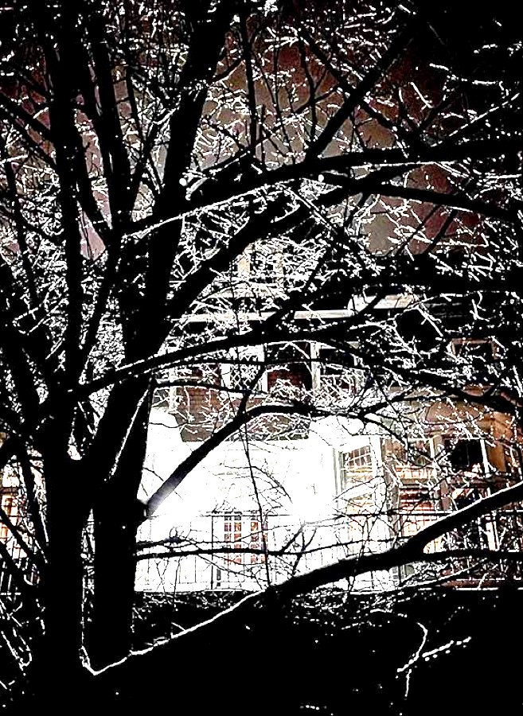

✖ Hell House — active hunt
🏚️ Hell House
The show's central haunted manor. The target look, from the real (burned) original below: dark shingle/stone Queen Anne — floor-to-ceiling dark oak paneling, a grand carved staircase, beamed/coffered ceilings, leaded glass, big carved fireplaces, its own wooded grounds. We now need a hero exterior + dark interior.
The real Hell House (120 Hill St, Whitinsville — burned 2024) — our look reference



Replacement candidates — real photos


Leading candidates (link to listings): Morning Garden · Stevens Estate · Andover Estate · Turner Hill · Stillington Hall · Searles Castle · Lowell Gilded Age. Full slate + all 81 pins on the dashboard map.